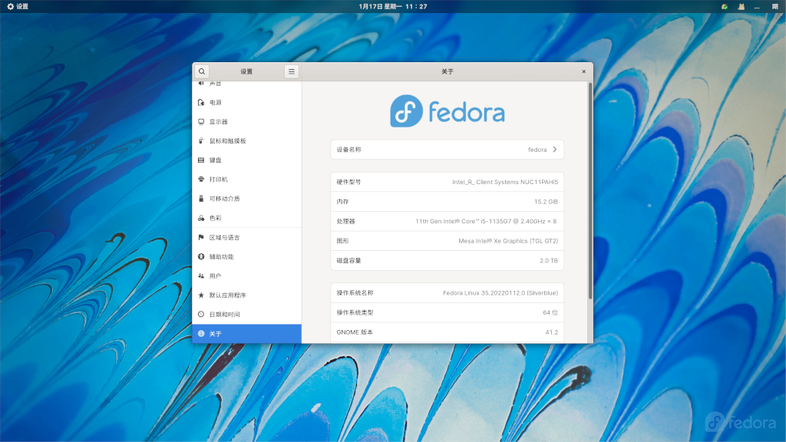
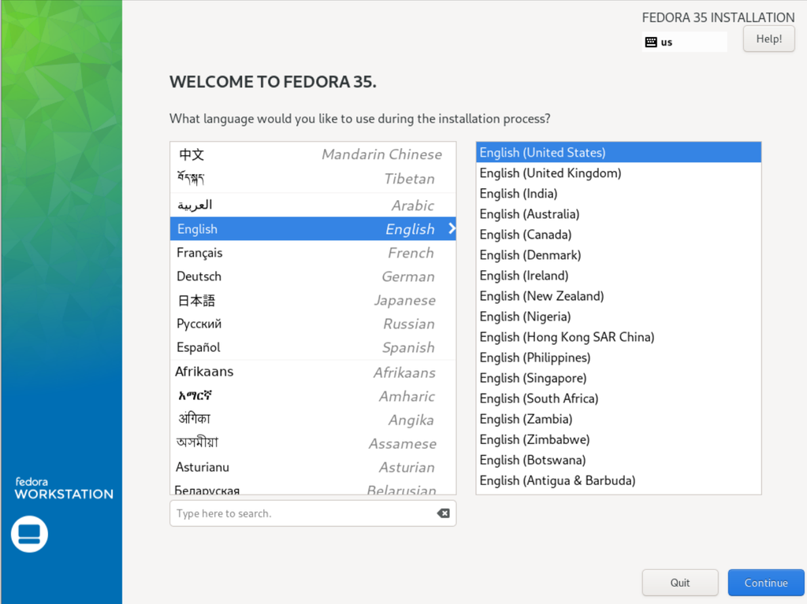
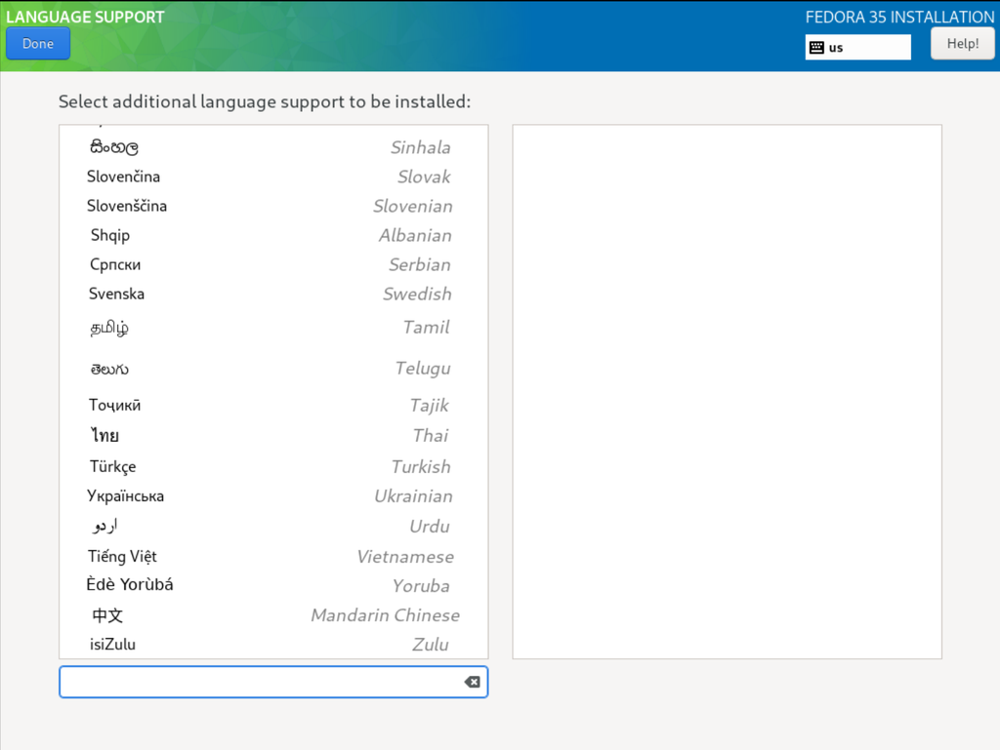
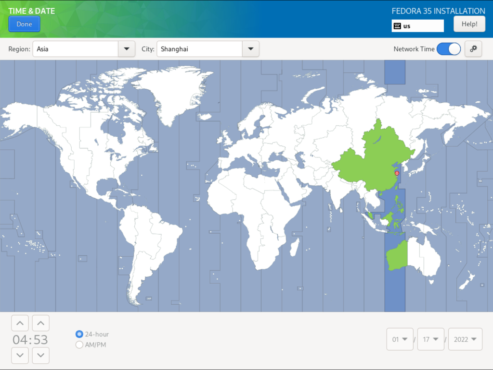
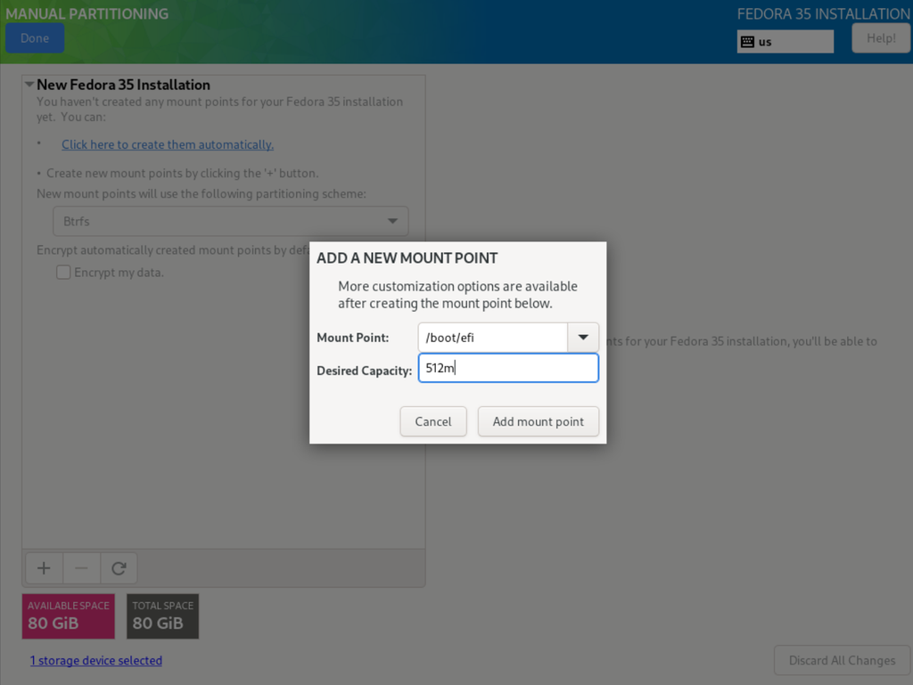
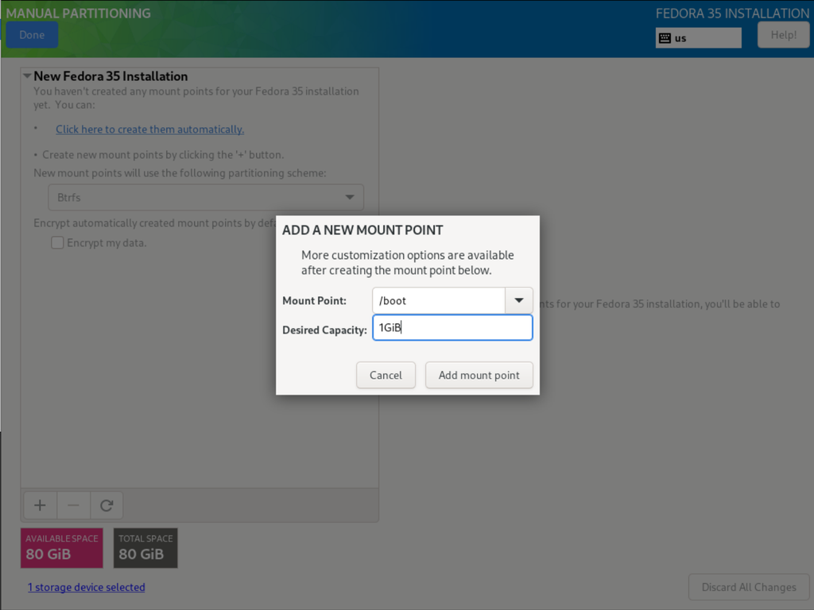
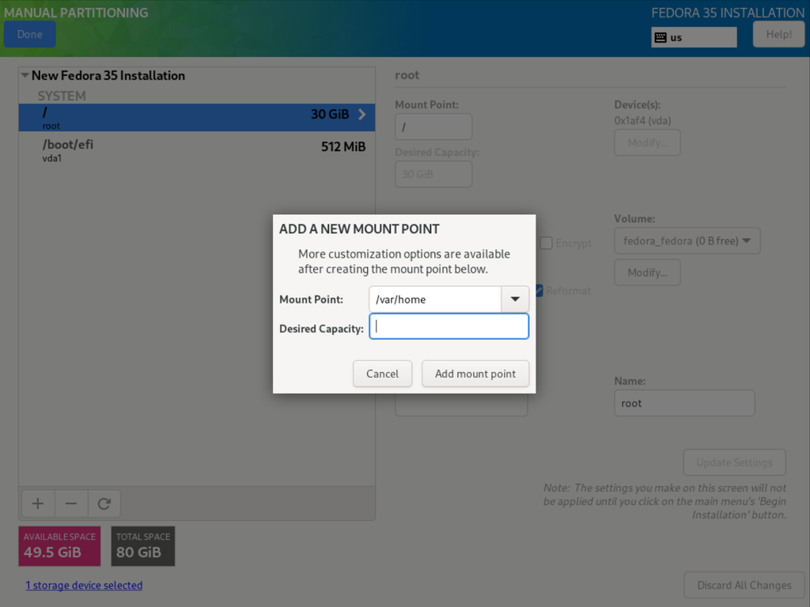
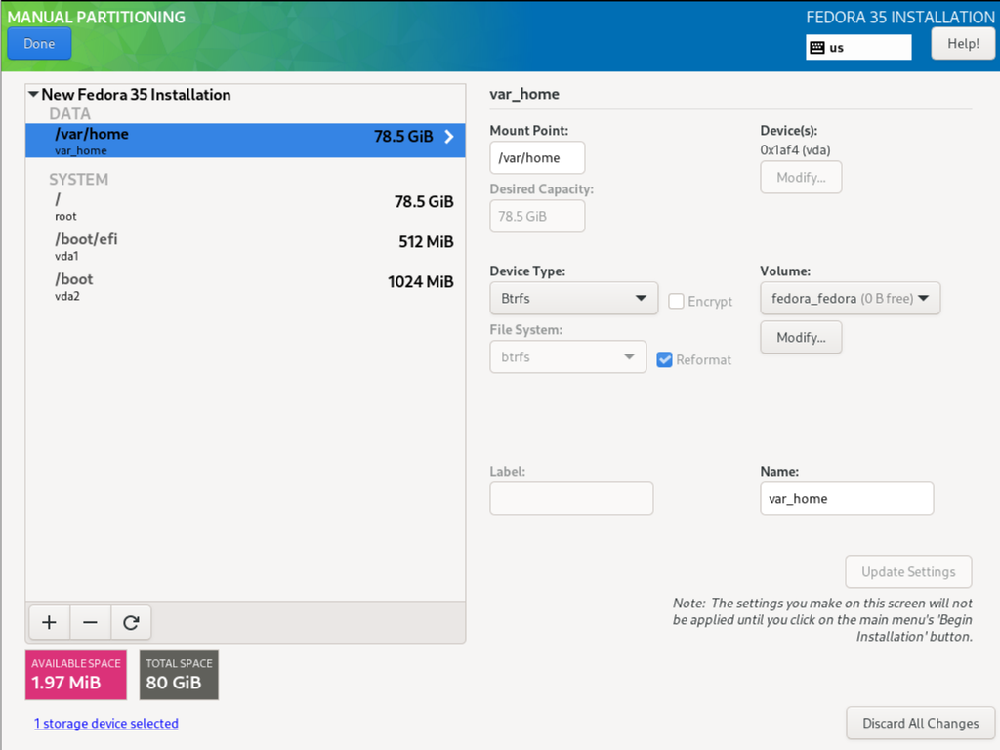
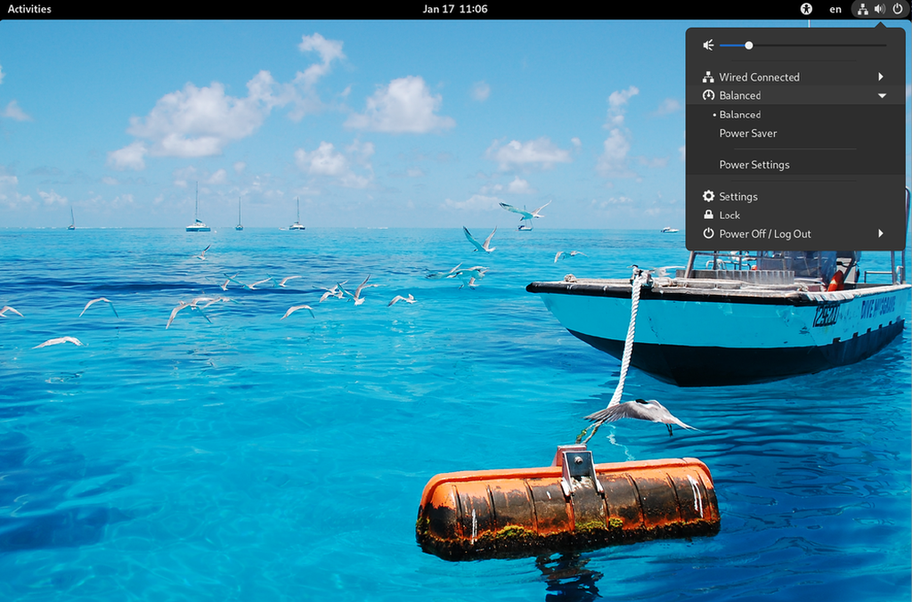
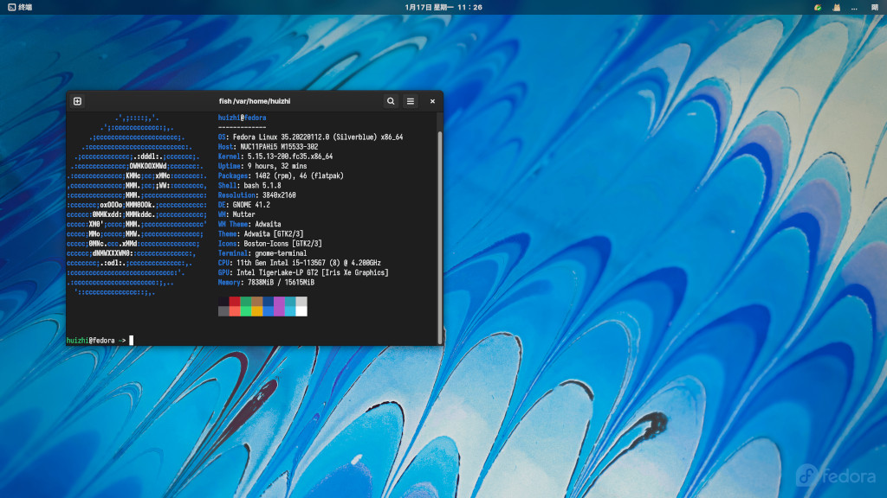

Fedora Silverblue 安装指南¶
Fedora Silverblue 简介¶

Fedora Silverblue 是 Fedora Workstation 的变体版本，由 Atomic Workstation 更名而来。它是一个不可变的操作系统，目标是为开发者和重度容器用户提供一个稳定且可靠的平台。
- Silverblue 的默认桌面环境是 Gnome，但它也有一个基于 KDE 桌面环境的变体：Fedora Kinoite。安装 Fedora Kinoite 所需要注意的事项基本与 Silverblue 相同，此处不再重复叙述。
Fedora Silverblue 不可变是指 / 和 /usr 目录下的文件为只读模式。由于该特性使得它相对于传统的 Linux 操作系统更加稳定，更适合于容器化程序的应用和基于容器的软件开发。同时，容器将应用程序与系统隔离也让系统更为可靠。
Fedora Silverblue 系统更新的速度非常快，无需等待安装，重启系统后即可使用新版本。如果系统出现问题可选择回滚。
安装前的准备¶
Fedora Silverblue 的安装方式和 Fedora Workstation 几乎一致，差异在硬盘分区部分。
其它安装步骤也可以参考 Fedora Workstation 安装指南。
Attention
无论是双系统还是手动分区都存在一定的风险，建议有相关的知识储备或经验时再做尝试。
-
已知局限
双系统引导和手动分区时 Fedora Silverblue 缺乏一定的灵活性。 当然，Fedora Silverblue 是支持双系统引导和手动分区的，详见“手动分区”部分。 -
获取 Fedora Silverblue 安装镜像
请前往 Fedora Silverblue 网站进行下载。 -
验证安装镜像
安装前请务必验证镜像。验证镜像的方法有很多，Unix-like 系统下可运行：然后，将输出的结果与下载页面的 checksum 文件进行比对。sha256sum /path/to/Fedora-Silverblue-ostree-x86_64-35-1.2.iso -
制作安装介质
使用 Ventoy、Rufus 或 Fedora Media Writer 创建安装所需要的引导盘。
Fedora Silverblue 安装流程¶
Attention
安装前请注意做好资料备份。
Fedora Silverblue 桌面环境是 GNOME，如果希望安装 KDE 桌面环境请选择 Fedora Kinoite，XFCE、LXQt、i3 正在构建中。除了 Fedora Silverblue 之外，其它基于 Fedora Silverblue 的桌面环境由社区特别兴趣小组（SIG）构建。

启动到安装环境¶
开机后选择刚刚创建的引导介质进行引导。 如果已完成校验镜像选择 “Install Fedora 35”，否则选择第二项 “Test this media & install Fedora 35”。如下图所示：

安装界面¶
首先选择安装界面所使用的语言，示例选择英文

点击“继续”，进入安装信息摘要画面。

键盘布局¶
键盘布局默认为 us（美式键盘映射）。根据自己的情况，点击左下角“+”添加所需键盘布局，通常使用默认的美式键盘布局就可以了。

系统语言¶
根据个人偏好选择系统的默认语言。如果要使用中文，请将滚动条拖至最下方或输入 chinese 进行检索。

时区和校时服务器¶
时区¶
设置时区，示例设置为中国上海。如果与 Windows 安装双系统，请取消右上方 Network Time （网络时间）的勾选。

校时服务器¶
点击上图右上角齿轮图标，设置网络校时服务器，一般默认就可以了。也可以选择距离相对近的校时服务器，比如：中国国家授时中心 cn.ntp.org.cn。

分区¶
A. 自动分区¶
官方推荐自动分区。经测试，目前最新的 Fedora Silverblue 35 安装程序的自动分区方案已经兼容单系统与双系统安装方案。
B. 手动分区¶
大多数使用场景硬盘分区应遵循够用原则（越简单越好），易于后期的维护和排障。手动分区时 Fedora Silverblue 可使用常规的文件系统，如：Btrfs、LVM、xfs、ext4 等。
下面以 / 、/boot、/boot/efi、/var/home 为例进行演示。
分区示例
| 挂载点 | 分区 | 分区类型 | 建议大小 |
|---|---|---|---|
/boot/efi |
EFI 系统分区 | FAT32 | 100-512M |
/boot |
引导分区 | Ext4 | 512M-1G |
/ |
/ 子卷 |
Btrfs | 15-30G以上 |
/var/home |
home 子卷 | Btrfs | 剩余空间 |
如已知局限所述，Fedora Silverblue 手动分区存在一些问题，请谨慎使用，官方推荐使用自动分区。
如果希望尝试手动分区，请参考以下说明。
可指定为分区挂载点的有：
- /
- swp
- /boot
- /boot/efi
- /var
- /var/home
- /var/log
- /var/containers
Attention
Anaconda 安装程序无法检测分区方案是否符合 Silverblue 的分区限制。也就是说，即使分区方案不兼容，安装程序也没有任何提示。
进入手动分区界面¶
点击安装信息摘要界面的“安装位置”，进入以下界面：

现在位于设备选择界面，点选”本地标准硬盘“中的安装系统所需硬盘，然后选择”自定义“；点击左上角”完成“按扭即可进入”手动分区“界面。
EFI 系统分区¶

引导分区¶

/ 子卷¶
/ 子卷和 home 子卷共享一个 btrfs 卷，根据占用情况 btrfs 文件系统将自动动态调整空间。

home 子卷¶
该子卷使用剩余空间，因此无需要指定大小。

分区完成状态如下图：¶

检查刚才的分区并点击左上角”完成“，此时程序将跳出确认对话框，确保无误后点击”确认“。
等待安装完毕¶
接下来执行系统安装，完成后点击右下角的”重启系统“。

完成安装¶
重启后将进入欢迎界面，进行简单的用户名、密码以及开启第三方存储库等设置后，安装完成。



更多技术细节，请参考 Fedora Silverblue 用户指南

创建日期: 2022-01-20 04:21:18